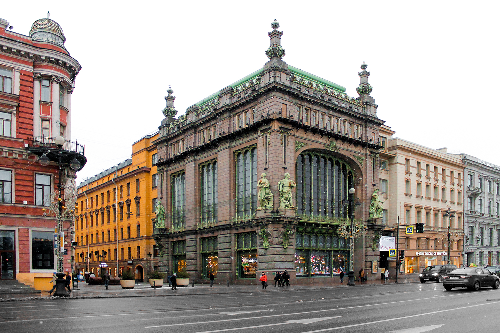
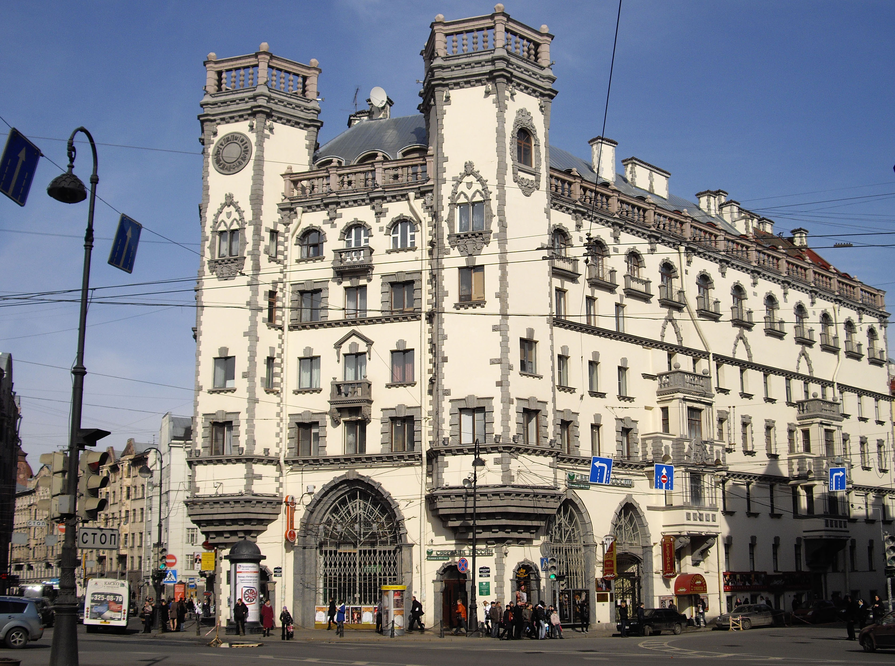

Торговый дом братьев Елисеевых

Доходный дом Розенштейна
| Петровское барокко | Высокое барокко | Классицизм | Ампир | Эклектика |
Торговый дом братьев Елисеевых
Доходный дом Розенштейна
С переходом в новый ХХ век мало что-изменилось. Векторы развития архитектуры остались прежними. Изменились лишь нюансы. На фоне безудержного стилизаторства в массовом строительстве предпринимались все более серьезные усилия сделать архитектуру рациональной и функциональной. Ускорилось движение в сторону технологичного стиля, где термин: «технологичный» употреблялся не в строительно-техническом смысле, а в смысле функциональности.
В новых компоновочных решениях и в применении новых конструкций и материалов искали решение архитектурно-эстетических задач. Термин «модерн» (франц.— современный) вошел в жизнь повсеместно не только в России, но и в Европе и в Америке. Попытки отойти от ретроспективизма эклектики были везде. Идеологи модерна считали, что в архитектурном проектировании надо исходить из свободной планировки, хорошо обеспечивающей функцию сооружения, что надо отказаться от проектирования в рамках стилей, что надо, никому не подражая, перейти к выработке нового архитектурно-художественного языка, основанного на достижениях строительной техники. Каждое сооружение должно нести черты индивидуальности проектировщика.
Поэтому модернистскую декорировку и орнаментику в архитектурных сооружениях того периода отличают обилие причудливо изогнутых линий и форм, плавные перетекания линий и форм из одних в другие, лианообразные извивы и переплетения. В России самым известным и последовательным архитектором, работавшим в стиле модерн, был Ф.О. Шехтель.
Принято считать, что стиль модерн продлился короткий период на самом рубеже веков в течение примерно двух десятилетий. Это не совсем так. После 1910 года ослабло увлечение модернизмом. Ведь с появлением модерна как серьезного стиля появилась и масса подражаний.
В массовом строительстве на сооружения в стиле серьезного содержательного модерна приходился ничтожный процент. Зато появилось много домов, похожих на модерн. Элементы модернизма стали украшать многие дома начала века. Дерзость стилизаторов доходила до того, что иногда конструктивный смысл терялся ради некоего мистического характера и настроения. Но это был не модерн, а модернизм или постмодернизм или обычная стилизаторская эклектика. Поэтому лучше сказать, что после 1910 года стала затухать увлеченность модернизмом.
Дом торгового банка
Дом Ленинградской торговли